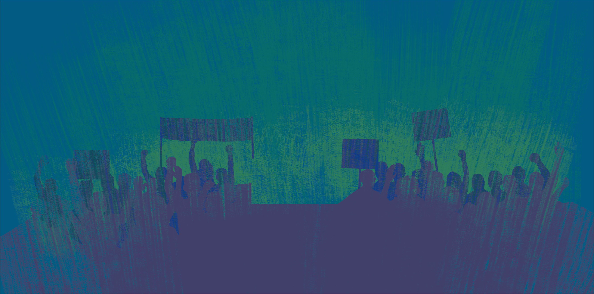
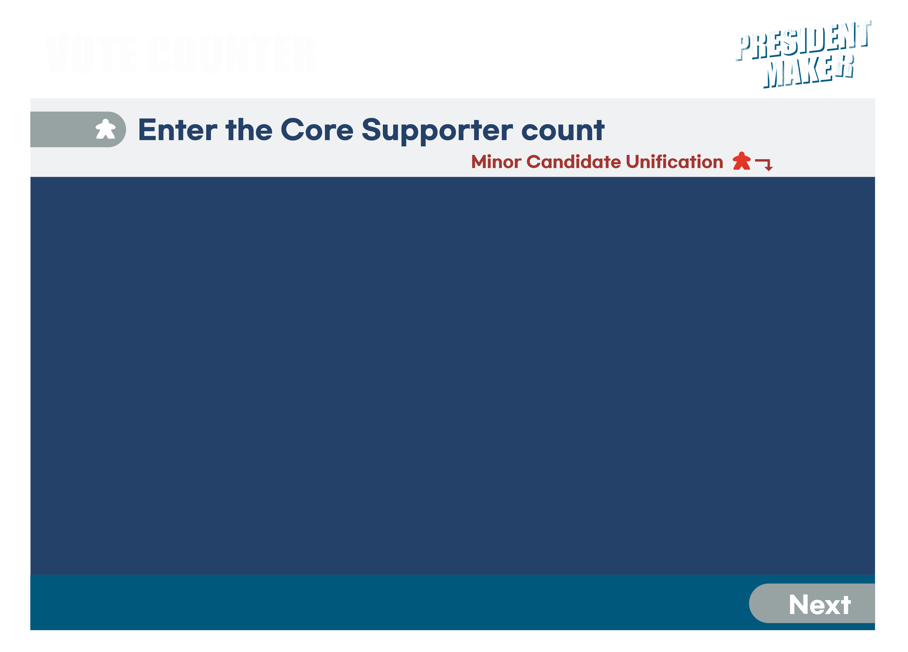
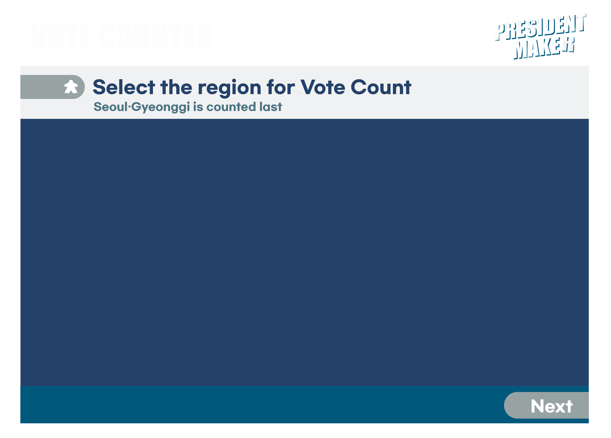
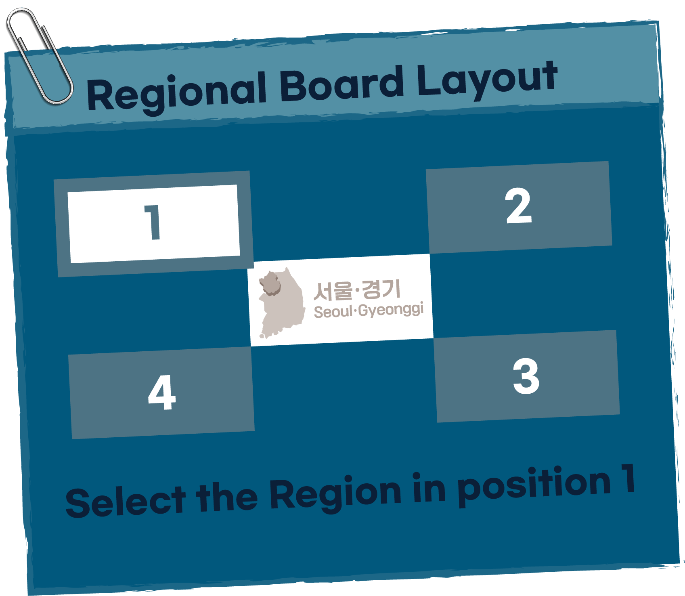
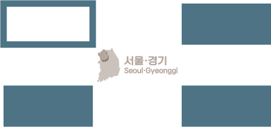
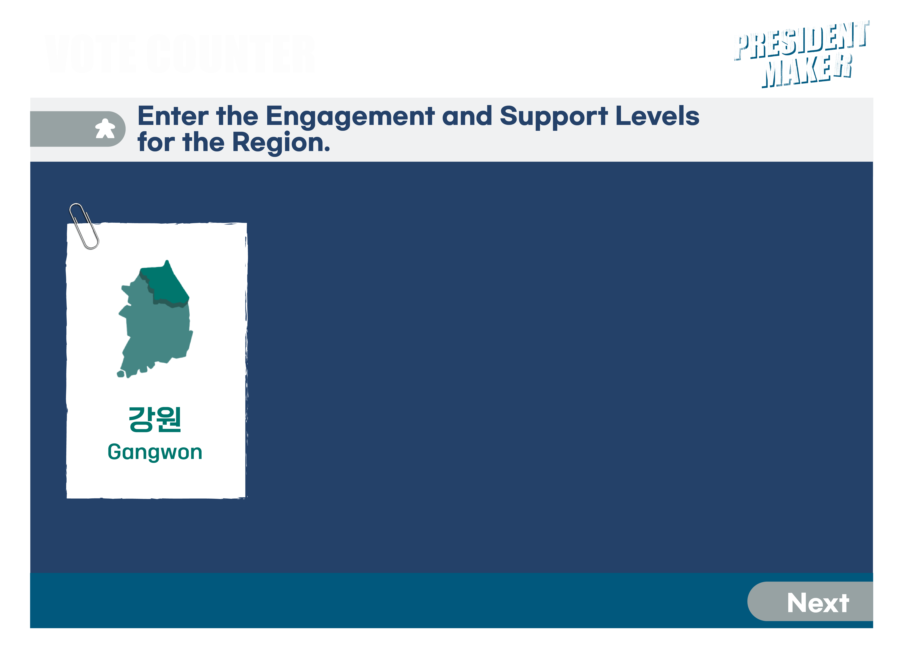

Please
enter
the number of core supporters
Please indicate if minor candidates have unified

Please select a region for vote counting
Seoul/Gyeonggi region is counted last
 
Please select the region for position 1

Please enter the
engagement level
and
supporter count
for the selected region
Vote counting in progress!
Remaining draws
0
/
0